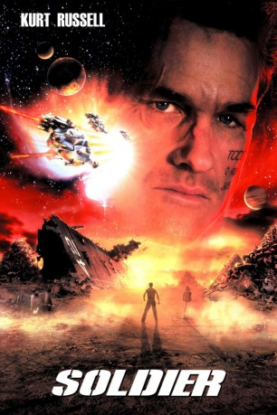

gesehen am 13.07.2015
gesehen am 13.07.2015Alternativ: Soldier gesehen am 13.07.2015
 
 IMDB-Wertung: 6.0 / 10
IMDB-Wertung: 6.0 / 10  Metascore:
Metascore: 
Im zukünftigen Jahr 1996 wird eine Gruppe von Kindern zu Soldaten erzogen und ausgebildet. Unter ihnen ist auch Todd, der sich im Jahre 2036 zu einer tödlichen Kampfmaschine (Kurt Russell) entwickelt hat, die schon in zahlreiche Schlachten gekämpft hat. Doch als die Befehlshaber eines Tages zu dem Schluss gelangen, dass neue, genetisch modifizierte Soldaten besser für künftige Schlachten geeignet seien, sollen die alten "Modelle" einfach ausgetauscht werden. Nach einem Kampf, bei dem mehrere seiner Genossen ums Leben kommen, wird Todd, der schwer verletzt überlebt, aber ebenfalls für tot gehalten wird, auf den Müllentsorgungsplaneten Arcadia transportiert. Dort stößt er auf eine Gruppe Siedler, die sich überraschend gut auf Arcadia arrangiert haben. Doch als eines Tages ein Mordkommando - bestehend aus den neuen Übersoldaten - entsandt wird, weiß Todd, dass er die friedlichen Bewohner beschützen muss.
Jahr: 1998
Dauer: 99 Minuten
FSK: 18
Land: England Studio: Highlight FilmTonspuren: DTS - ,
Untertitel:
Auflösung: 1080p (1920x800) Größe: 4638 MB
Regisseur: Paul W.S. Anderson
Drehbuch: David Webb Peoples
Soundtrack: Joel McNeely
Darsteller:
 Kurt Russell als Todd 3465
Kurt Russell als Todd 3465 Jason Scott Lee als Caine 607
Jason Scott Lee als Caine 607 Jason Isaacs als Colonel Mekum
Jason Isaacs als Colonel Mekum Connie Nielsen als Sandra
Connie Nielsen als Sandra Sean Pertwee als Mace
Sean Pertwee als Mace Gary Busey als Church
Gary Busey als Church Mark De Alessandro als Goines
Mark De Alessandro als Goines Carsten Norgaard als Green
Carsten Norgaard als Green Michael Chiklis als Jimmy Pig
Michael Chiklis als Jimmy Pig Elizabeth Dennehy als Jimmy Pig's Wife
Elizabeth Dennehy als Jimmy Pig's Wife Paul Dillon als Slade
Paul Dillon als Slade Max Daniels als Red
Max Daniels als Red Jesse D. Goins als Chester
Jesse D. Goins als Chester Corbin Bleu als Johnny
Corbin Bleu als Johnny Sara Paxton als Angie
Sara Paxton als Angie Wyatt Russell als Todd - Age 11
Wyatt Russell als Todd - Age 11 Mark Bringelson als Rubrick
Mark Bringelson als Rubrick K.K. Dodds als Sloan
K.K. Dodds als Sloan Brenda Wehle als Hawkins
Brenda Wehle als HawkinsDatei: X:\FSK18-1900-1999\Star Force Soldier (1998, FSK18, 1920x800).mkv seit 09.07.2015
Festplatte: FSK18
 Es gibt insgesamt 108 Filme in der Gruppe 'FSK18-1900-1999'
Es gibt insgesamt 108 Filme in der Gruppe 'FSK18-1900-1999'